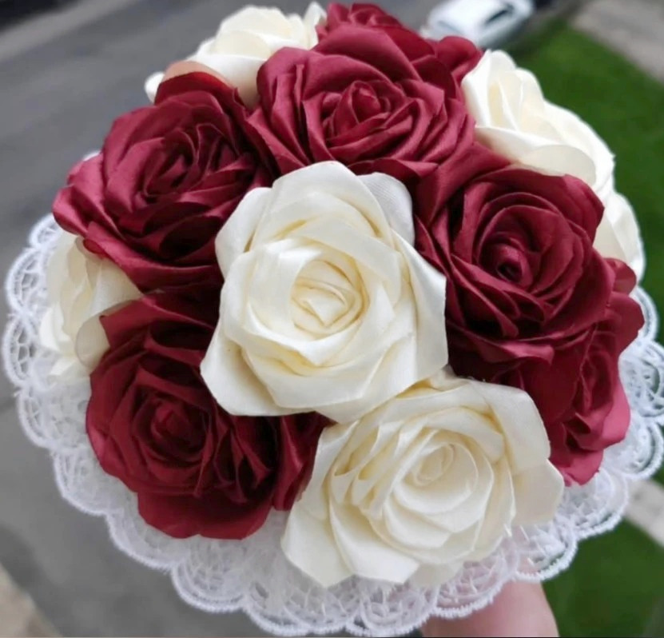
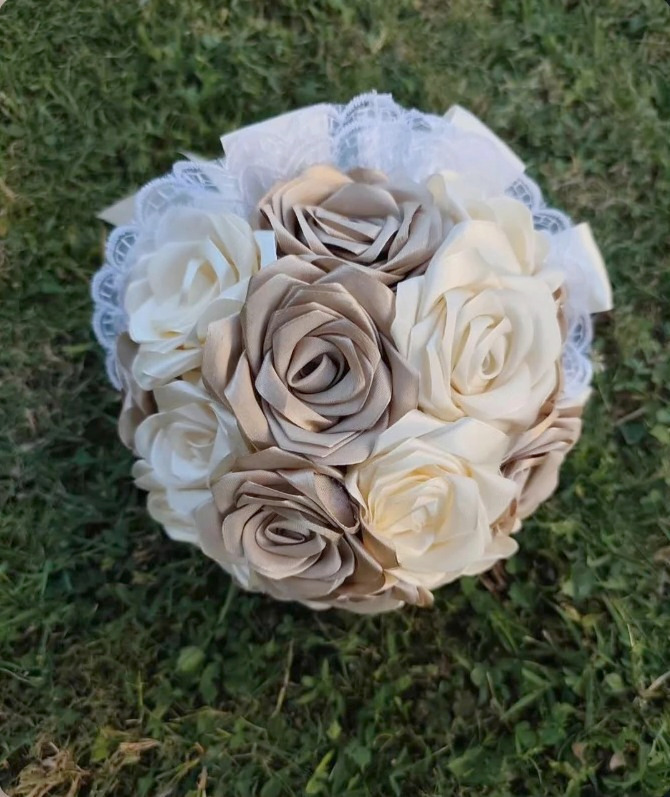
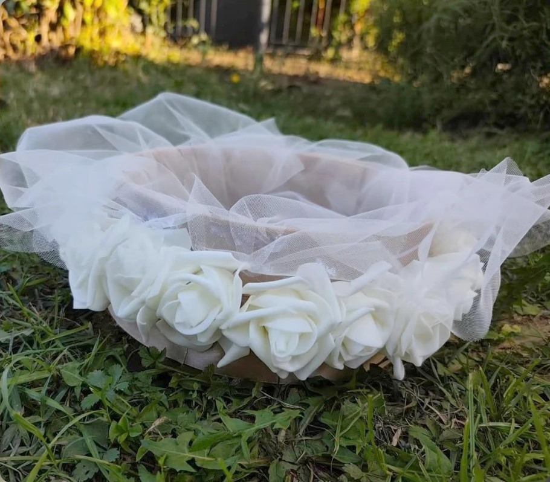
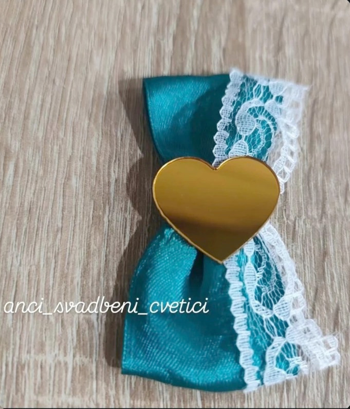
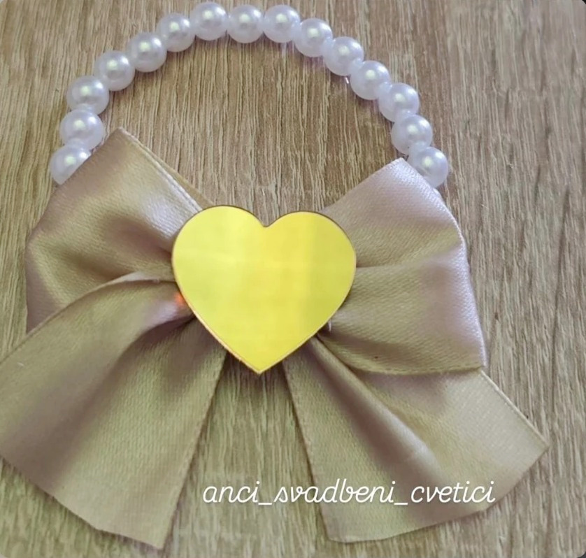
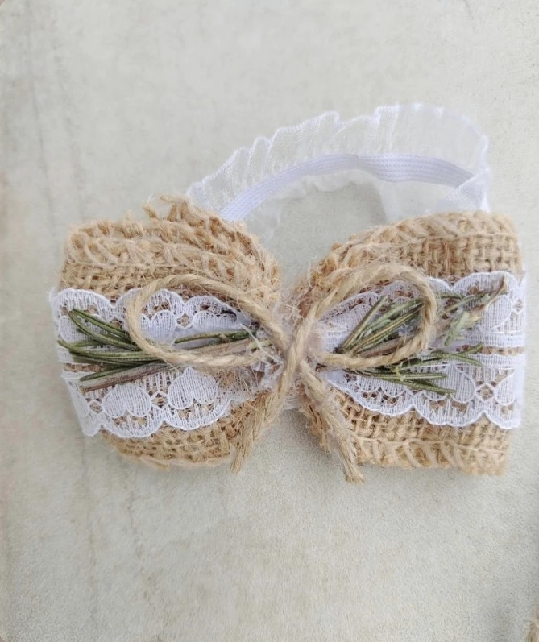

Anči svadbeni cvetići
Ručno izrađeni svadbeni dodaci
Bidermajeri
Ručno izrađeni bidermajeri od satenskih ruža, u boji po dogovoru.


Sito za mladu
Sito za mladu sa belim ružama i tilom.

Kićanke i reveri
Kićanke i reveri, u boji i stilu po želji.



Cene
Muški modeli
- Reveri na lepljenje60 do 65 dinara
Ženski modeli
- Kićankena vezivanje · na lastišu · biserne narukvice55 do 85 dinara
Za mladu
- Bidermajeri i sito za mladucena na upit
Avans 50% je obavezan prilikom porudžbine.
Dostava i preuzimanje
- SlanjePost Ekspresom širom Srbije
- Lično preuzimanjeŽarkovo — Banovo brdo, Beograd